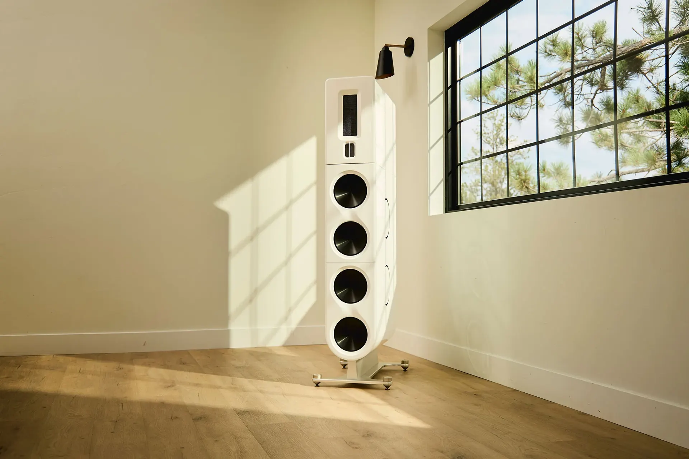
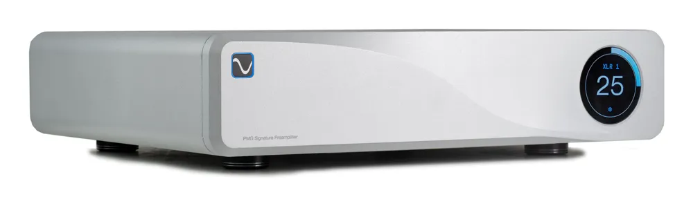
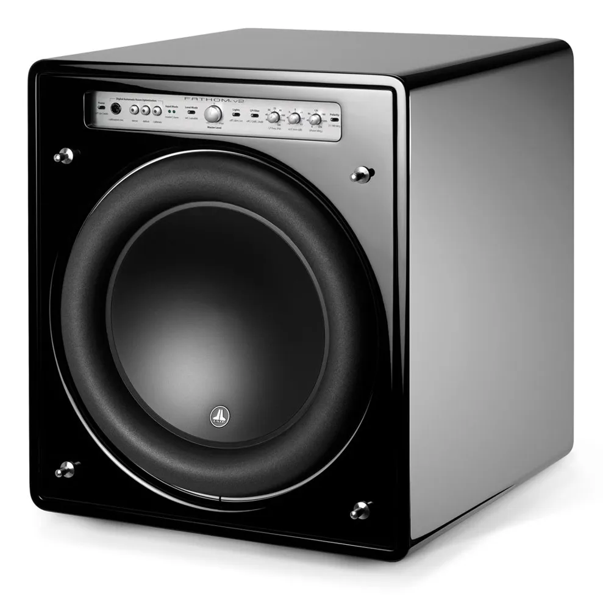
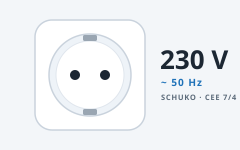

High End aus erster Hand.
Hifi2die4 bringt PS Audio, MSB Technology, Analysis Plus und JL Audio direkt vom Hersteller zu Ihrem Fachhändler. Mit deutscher Anleitung, Schuko-Stecker und persönlichem Service aus Leinzell.
Wenige Marken. Jede davon mit Überzeugung.
Wir importieren nur Hersteller, deren Geräte wir selbst hören wollen. Unsere Händler in Deutschland und Österreich bekommen Ware, Vorführgeräte und technisches Wissen aus einer Hand. Endkunden helfen wir bei Probehören, Einstellung und Reparatur.
- Vertrieb
- Fachhandel in Deutschland und Österreich
- Netz
- Alle Geräte für 230 V / 50 Hz, mit Schuko-Stecker
- Dokumentation
- Deutsche Bedienungsanleitung bei jedem Gerät
- Werkstatt
- Verkauf und Reparatur von HiFi-Geräten aller Art
- Standort
- Leinzell, Ostalbkreis
Fünf Hersteller, eine Anlaufstelle

PS Audio
PMG Signature, Stellar, Aspen-Lautsprecher und die PowerPlant-Netzregeneratoren.
Zur Markenseite
MSB Technology
Modulare Ladder-DACs von The Discrete bis Cascade und Sentinel.
Zur Markenseite
Analysis Plus
Patentierte Ovalgeometrie für Lautsprecher-, NF-, Phono-, HDMI- und Netzkabel.
Zur Markenseite
JL Audio
Fathom, Gotham, Dominion und E-Sub mit automatischer Raumeinmessung.
Zur Markenseite
Ferrum Audio
WANDLA, OOR, ERCO und das Hybrid-Netzteil HYPSOS.
Zur Markenseite
Deutsche Ausführung
Jedes Gerät mit Schuko-Stecker, europäischer Netzspannung und deutscher Bedienungsanleitung.
Was Sie von uns bekommen
Probehören
Wir organisieren Vorführungen bei Händlern in Ihrer Nähe oder nach Absprache in Leinzell.
Einstellhilfe
Aufstellung von Lautsprechern, Einmessung von Subwoofern und Abstimmung der Kette vor Ort.
Reparatur
Werkstattservice für unsere Marken und für HiFi-Geräte aller Art.
Kabelkonfektion
Analysis-Plus-Kabel in jeder Länge, mit Cinch, XLR, Bananas oder Kabelschuhen.
Vorführgeräte
Für unsere Händler halten wir Vorführgeräte und Schulungen bereit.
Garantie über den Importeur
Garantiefälle laufen über uns in Deutschland, ohne Versand in die USA.
Aktuelle Testberichte
Die Berichte erscheinen bei den Magazinen. Ein Klick öffnet den Originaltest.
Händler finden oder Händler werden
Unsere Marken hören Sie bei ausgewählten Fachhändlern in Deutschland und Österreich. Sie führen selbst ein HiFi-Geschäft? Wir unterstützen Sie mit Vorführgeräten, Schulung, Preislisten und Marketingmaterial.
Sprechen Sie mit uns
- Anschrift
- Hifi2die4 GmbH
Austr. 9
73575 Leinzell
- Telefon
- +49 7175 909032
- Mobil
- +49 179 2991449
- info@hifi2die4.de
- Geschäftsführer
- Jürgen Sachweh